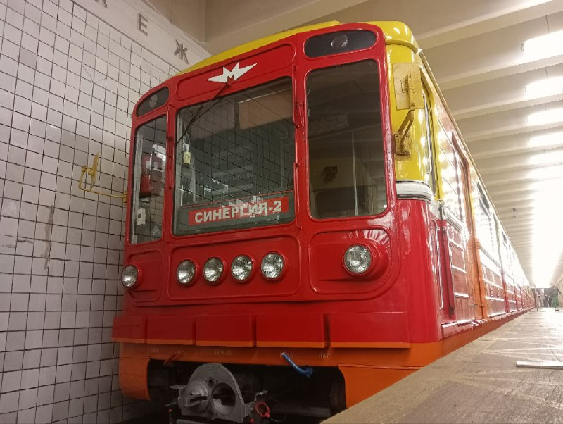
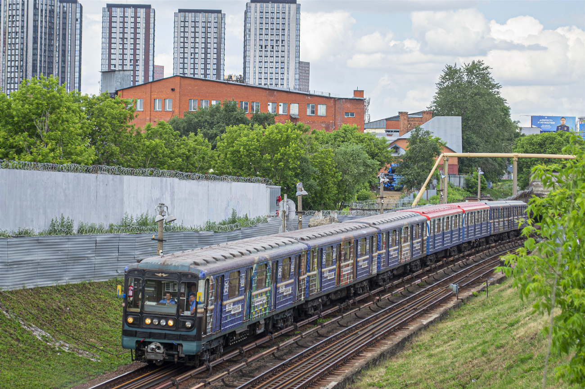

Служебные поезда Московского метро
В Московском метрополитене эксплуатируются различные служебные поезда для обслуживания путей, контактного рельса, тоннелей и другого хозяйства. Случайно поймать такой — большая удача для любителя транспорта!
Что такое служебные поезда?
Путеизмерители
Контроль геометрии рельсового пути, выявление дефектов и отклонений.
Контактно-аккумуляторные
Для работы на обесточенных участках, доставки бригад и материалов.
Дефектоскопы
Обнаружение внутренних дефектов рельсов ультразвуком.
Служебные поезда обычно работают в ночное время, в технологические окна, когда метро закрыто для пассажиров. Увидеть их днем — большая редкость!
Служебные поезда Московского метро
Вот некоторые из служебных поездов, эксплуатирующихся в метрополитене:

Еж3-путеизмеритель
Служебный состав Московского метрополитена. В его составе — вагон-лаборатория автоматики и радиосвязи службы СЦБ (№5564, служит с 1975 года) и вагон сопровождения путеизмерителя (№5824 — последний оригинальный Еж3 в РФ).
- Вагон №5564 — лаборатория СЦБ и связи, салон перестроен из пассажирского в техническое купе с оборудованием (служит с 1975 года)
- Вагон №7374 — путеизмеритель (81-714 ЛВЗ, переоборудован в 2006)

ДК1
Диагностический комплекс «Синергия-1» — служебный поезд-лаборатория для диагностики инфраструктуры Московского метрополитена.
- Введён в эксплуатацию в 2017 году
- Состоит из 5 вагонов на базе номерных
- Вагоны сопровождения диагностического комплекса
- Депо: ТЧ-4 «Красная Пресня»

ДК2
Диагностический комплекс «Синергия-2» — служебный поезд-лаборатория для диагностики инфраструктуры Московского метрополитена.
- Введён в эксплуатацию в июле 2015 года
- Состоит из 5 вагонов на базе номерных
- Вагоны сопровождения диагностического комплекса
- Депо: ТЧ-4 «Красная Пресня»

Олег Табаков
Перегоночный поезд посвященный Олегу Табакову
- Перегоночный поезд в депо ТЧ-15
- Тематическая расцветка
Как увидеть служебный поезд?
Ночные смены
Служебные поезда работают преимущественно ночью, когда метро закрыто. Увидеть их можно только находясь на станции в момент открытия/закрытия.
Технологические окна
Днем служебные поезда можно встретить во время технологических окон на отдельных участках линий.
Станции с тупиками
На конечных станциях с оборотными тупиками иногда можно заметить служебную технику.
Специальные мероприятия
На выставках и парадах поездов иногда показывают служебный подвижной состав.
Помните: Служебные поезда не предназначены для перевозки пассажиров. Наблюдать за ними можно только с платформы, соблюдая правила безопасности!
"Служебные поезда — это незаметные герои метро, которые каждую ночь проверяют пути, убирают тоннели и обеспечивают безопасность миллионов пассажиров."